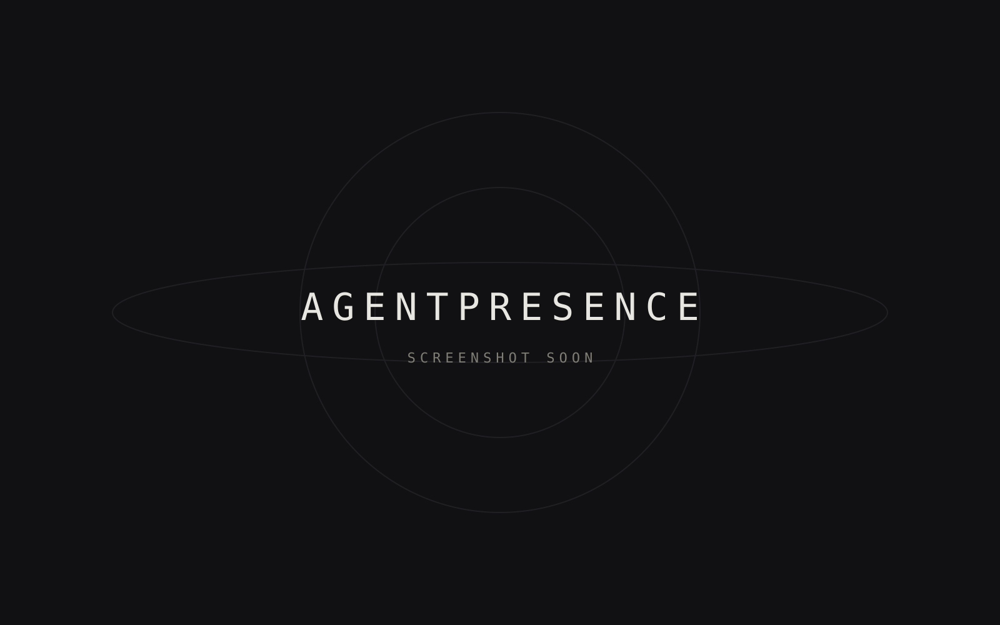

AgentPresence
A small local Rust runtime that publishes AI coding-agent activity to Discord Rich Presence.

AgentPresence detects which AI coding agent — Codex, Pi or OpenCode — is active in your terminals and updates your Discord status automatically. Switch between agents and your status follows.